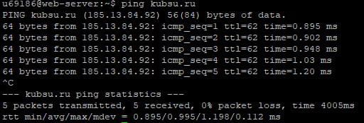
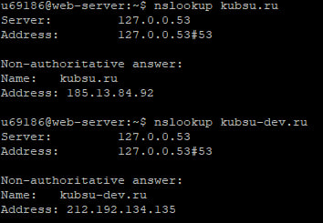
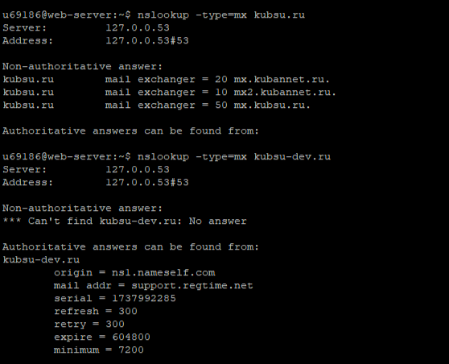
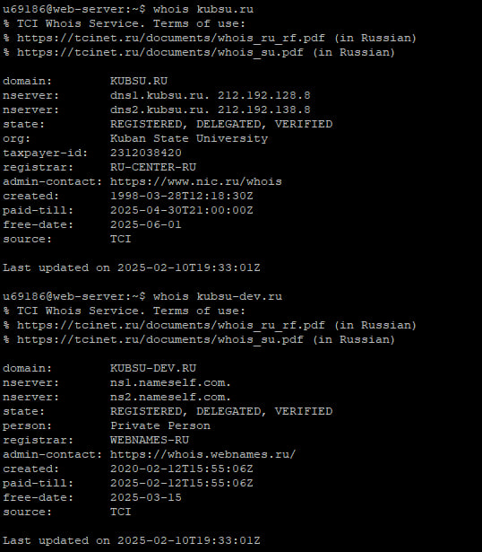

1. Использование утилиты ping, чтобы узнать IP-адрес веб-сервера kubsu.ru

2. Использование команды nslookup, чтобы узнать A-записи и MX-записи домена kubsu.ru и kubsu-dev.ru
Команда nslookup вызвала только A-запись домена kubsu.ru и kubsu-dev.ru. A-запись указывает IP-адрес нужного нам доменного имени

Mx-запись домена kubsu.ru и kubsu-dev.ru необходимо вызывать черех команду nslookup -type=mx.
MX-запись определяет почтовый сервер, который будет обрабатывать электронную почту для конкретного домена.

Как мы можем увидеть, при вызове Mx-записи домена kubsu-dev.ru происходит ошибка No answer. Скорее всего потому, что у домена нет электронной почты или из-за его приватности.
3. Использование команды whois, чтобы узнать дату регистрации домена kubsu.ru и kubsu-dev.ru

Помимо этого можно узнать приватность (kubsu-dev.ru), последнее обновление домена и его состояние (зарегистрирован, верифицирован, делегирован).
Делегированный домен - это домен, который уже привязан к какому-то серверу или хостинг-провайдеру, который хранит о нем информацию и управляет.